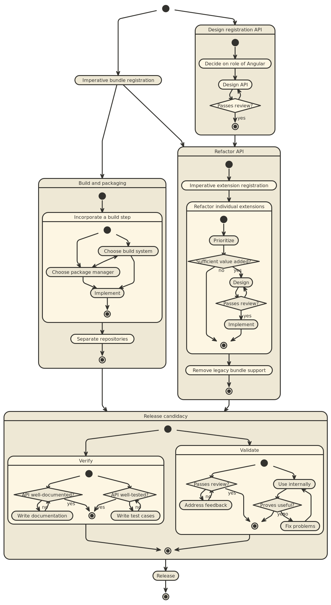

This document summarizes a path toward implementing API changes from the API Redesign for Open MCT v1.0.0.
These plans are intended to minimize:

Register whole bundles imperatively, using their current format.
For example, in each bundle add a bundle.js file:
define([
'mctRegistry',
'json!bundle.json'
], function (mctRegistry, bundle) {
mctRegistry.install(bundle, "path/to/bundle");
});
Where mctRegistry.install is placeholder API that wires into the
existing bundle registration mechanisms. The main point of entry
would need to be adapted to clearly depend on these bundles
(in the require sense of a dependency), and the framework layer
would need to implement and integrate with this transitional
API.
Benefits:
Detriments:
Note that API changes at this point do not meaningfully reflect the desired 1.0.0 API, so no API reviews are necessary.
After the previous step is completed, there should be a straightforward dependency graph among AMD modules, and an imperative (albeit transitional) API allowing for other plugins to register themselves. This should allow for a build step to be included in a straightforward fashion.
Some goals for this build step:
.js file.Should also consider which dependency/packaging manager should be used by dependent projects to obtain Open MCT. Approaches include:
npm. Dependents then declare their dependency with
npm and utilize built sources and assets in a documented
fashion. (Note that there are
documented challenges
in using npm in this fashion.)npm, but recommend dependents install using
bower, as this is intended for front-end development. This may
require checking in built products, however, which
we wish to avoid (this could be solved by maintaining
a separate repository for built products.)In all cases, there is a related question of which build system to use for asset generation/management and compilation/minification/etc.
webpack
is well-suited in principle, as it is specifically
designed for modules with non-JS dependencies. However,
there may be limitations and/or undesired behavior here
(for instance, CSS dependencies get in-lined as style tags,
removing our ability to control ordering) so it maygulp or grunt. Commonplace, but both still require
non-trivial coding and/or configuration in order to produce
appropriate build artifacts.npm.
Reduces the amount of tooling being used, but may introduce
some complexity (e.g. custom scripts) to the build process,
and may reduce portability.Refactor existing applications built on Open MCT such that they are no longer forks, but instead separate projects with a dependency on the built artifacts from Step 2.
Note that this is achievable already using bower (see warp-bower
branch at http://developer.nasa.gov/mct/warp for an example.)
However, changes involved in switching to an imperative API and
introducing a build process may change (and should simplify) the
approach used to utilize Open MCT as a dependency, so these
changes should be introduced first.
Design the registration API that will replace declarative extension categories and extensions (including Angular built-ins and composite services.)
This may occur in parallel with implementation steps.
It will be necessary to have a decision about the role of Angular at this point; are extensions registered via provider configuration (Angular), or directly in some exposed registry?
Success criteria here should be based on peer review. Scope of peer review should be based on perceived risk/uncertainty surrounding proposed changes, to avoid waste; may wish to limit this review to the internal team. (The extent to which external feedback is available is limited, but there is an inherent timeliness to external review; need to balance this.)
Benefits:
Note that in specific cases, it may be desirable to refactor some current "extension category" in a manner that will not appear as registries, or to locate these in different namespaces, or to remove/replace certain categories entirely. This work is deferred intentionally to allow for a solution of the general case.
Register individual extensions imperatively, implementing API changes from the previous step. At this stage, usage of the API may be confined to a transitional adapter in the framework layer; bundles may continue to utilize the transitional API for registering extensions in the legacy format.
An important, ongoing sub-task here will be to discover and define dependencies among bundles. Composite services and extension categories are presently "implicit"; after the API redesign, these will become "explicit", insofar as some specific component will be responsible for creating any registries. As such, "bundles" which use specific registries will need to have an enforceable dependency (e.g. require) upon those "bundles" which declare those registries.
Refactor individual extension categories and/or services that have been identified as needing changes. This includes, but is not necessarily limited to:
TelemetrySeries to TelemetryService.)Changes should be made one category at a time (either serially or separately in parallel) and should involve a tight cycle of:
By necessity, these changes may break functionality in applications built using Open MCT. On a case-by-case basis, should consider providing temporary "legacy support" to allow downstream updates to occur as a separate task; the relevant trade here is between waste/effort required to maintain legacy support, versus the downtime which may be introduced by making these changes simultaneously across several repositories.
Update bundles to remove any usages of legacy support for bundles (including that used by dependent projects.) Then, remove legacy support from Open MCT.
Once API changes are complete, Open MCT should enter a release candidacy cycle. Important things to look at here:
Any problems identified during release candidacy will require subsequent design changes and planning.
Once API changes have been verified and validated, proceed with release, including: